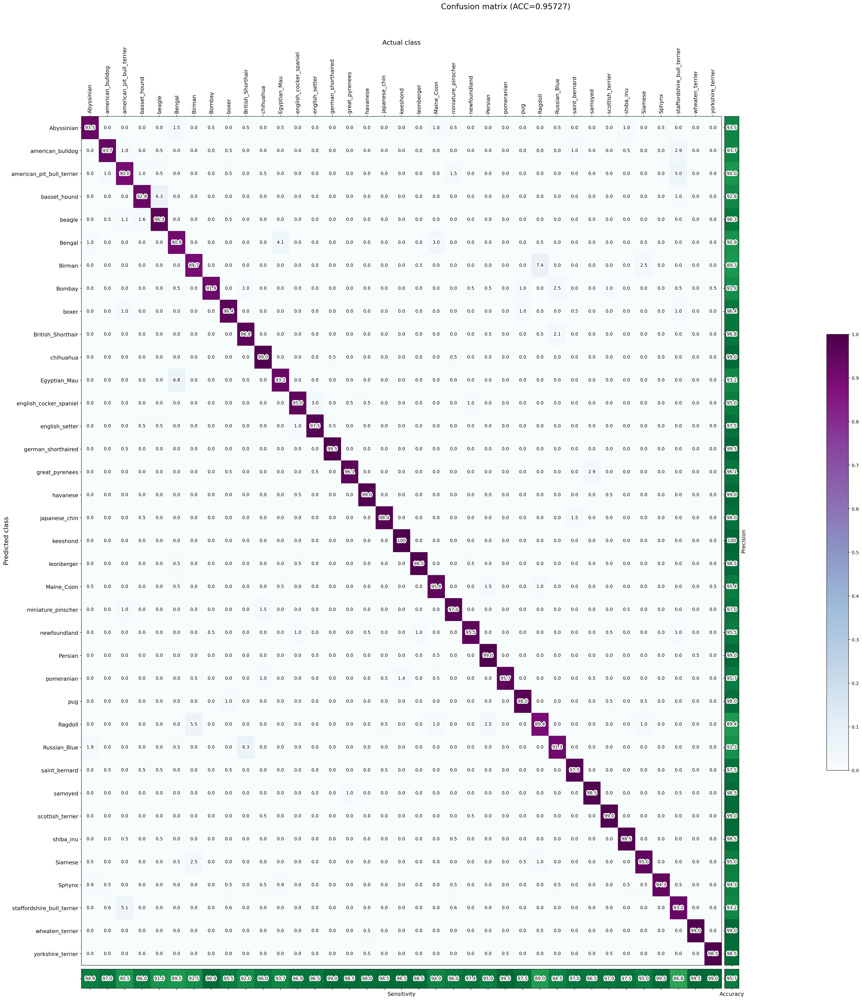
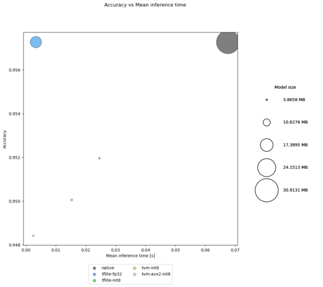
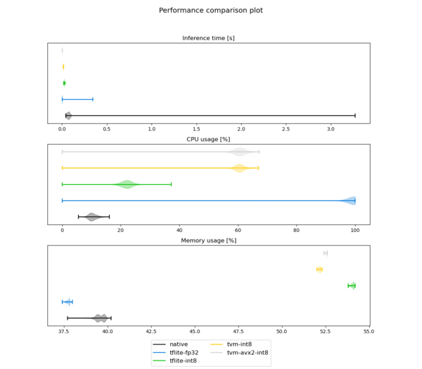
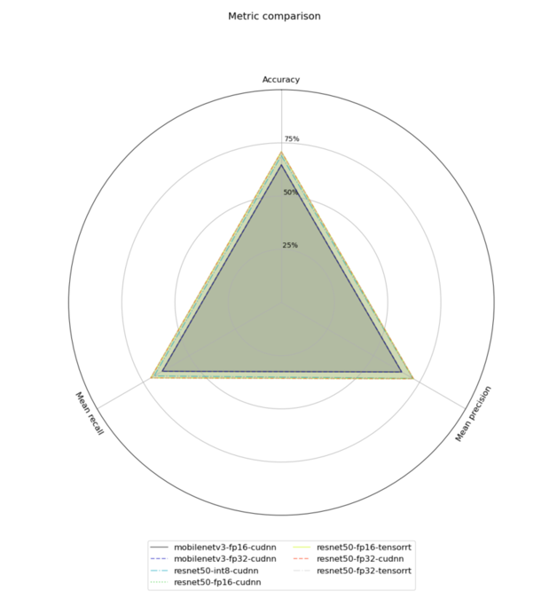

Kenning¶
Copyright (c) 2020-2023 Antmicro
Kenning is a framework for creating deployment flows and runtimes for Deep Neural Network applications on various target hardware.
Kenning documentation | Core API | kenning.ai

Kenning aims towards providing modular execution blocks for:
dataset management,
model training,
model optimization and compilation for a given target hardware,
running models using efficient runtimes on target device,
model evaluation and performance reports.
These can be used seamlessly regardless of underlying frameworks for the above-mentioned steps.
Kenning’s aim is not to bring yet another training or compilation framework for deep learning models - there are lots of mature and versatile frameworks that support certain models, training routines, optimization techniques, hardware platforms and other components crucial to the deployment flow. Still, there is no framework that would support all of the models or target hardware devices - especially the support matrix between compilation frameworks and target hardware is extremely sparse. This means that any change in the application, especially in hardware, may end up in a necessity to change the entirety or a significant part of the application flow.
Kenning addresses this issue by providing a unified API that focuses on deployment tasks rather than their implementation - the developer decides which implementation should be used for each task, and with Kenning, it is possible to do in a seamless way. This way, switching to another target platform results, in most cases, in a very small change in the code, instead of reimplementing larger parts of a project. This is how Kenning can get the most out of the existing Deep Neural Network training and compilation frameworks.
Seamless nature of Kenning also allows developers to quickly evaluate the model on various stages of optimizations and compare them as shown in Example use case of Kenning.
Kenning installation¶
Module installation with pip¶
To install Kenning with its basic dependencies with pip, run:
pip install -U git+https://github.com/antmicro/kenning.git
Since Kenning can support various frameworks, and not all of them are required for users’ particular use cases, some of the requirements are optional. We can distinguish the following groups of extra requirements:
tensorflow- modules for work with TensorFlow models (ONNX conversions, addons, and TensorFlow framework),torch- modules for work with PyTorch models,mxnet- modules for work with MXNet models,nvidia_perf- modules for performance measurements for NVIDIA GPUs,object_detection- modules for work with YOLOv3 object detection and the Open Images Dataset V6 computer vision dataset,iree- modules for IREE compilation and runtime,tvm- modules for Apache TVM compilation and runtime,onnxruntime- modules for ONNX Runtime,docs- modules for generating documentation,test- modules for Kenning framework testing,real_time_visualization- modules for real time visualization runners.
To install the extra requirements, e.g. tensorflow, run:
sudo pip install git+https://github.com/antmicro/kenning.git#egg=kenning[tensorflow]
Working directly with the repository¶
For development purposes, and for usage of additional resources (as sample scripts or trained models), clone repository with:
git clone https://github.com/antmicro/kenning.git
To download model weights, install Git Large File Storage (if not installed) and run:
cd kenning/
git lfs pull
Kenning structure¶

The kenning module consists of the following submodules:
core- provides interface APIs for datasets, models, optimizers, runtimes and runtime protocols,datasets- provides implementations for datasets,modelwrappers- provides implementations for models for various problems implemented in various frameworks,compilers- provides implementations for compilers and optimizers for deep learning models,runtimes- provides implementations of runtime on target devices,interfaces- provides interface classes to group related methods used in Kenningcoreclasses,runtimeprotocols- provides implementations for communication protocols between host and tested target,dataproviders- provides implementations for reading input data from various sources, such as camera, directories or TCP connections,outputcollectors- provides implementations for processing outputs from models, i.e. saving results to file, or displaying predictions on screen.onnxconverters- provides ONNX conversions for a given framework along with a list of models to test the conversion on,runners- provide implementations for runners that can be used in runtime,report- provides methods for rendering reports,drawing- provides methods for rendering plots for reports,resources- contains project’s resources, like RST templates, or trained models,scenarios- contains executable scripts for running training, inference, benchmarks and other tests on target devices,utils- various functions and classes used in all above-mentioned submodules,tests- submodules for framework testing.
core classes used throughout the entire Kenning framework:
Datasetclass - performs dataset download, preparation, dataset-specific input preprocessing (i.e. input file opening, normalization), output postprocessing and model evaluation,ModelWrapperclass - trains the model, prepares the model, performs model-specific input preprocessing and output postprocessing, runs inference on host using native framework,Optimizerclass - optimizes and compiles the model,Runtimeclass - loads the model, performs inference on compiled model, runs target-specific processing of inputs and outputs, and runs performance benchmarks,RuntimeProtocolclass - implements the communication protocol between the host and the target,DataProviderclass - implements data provision from such sources as camera, TCP connection or others for inference,OutputCollectorclass - implements parsing and utilization of data from inference (such as displaying the visualizations, sending the results to via TCP),Runnerclass - represents single runtime processing block.
Kenning usage¶
There are several ways to use Kenning:
Using executable scripts from the
scenariossubmodule, configurable via JSON files (recommended approach);Using executable scripts from the
scenariossubmodule, configurable via command-line arguments;Using Kenning as a Python module.
Kenning scenarios are executable scripts for:
Model training and benchmarking using its native framework (
model_training),Model optimization and compilation for target hardware (
json_inference_testerandinference_tester),Model benchmarking on target hardware (
json_inference_tester,json_inference_server,inference_tester,inference_server),Rendering performance and quality reports from benchmark data (
render_report).
For more details on each of the above scenarios, check the Kenning documentation.
Example use case of Kenning¶
Let’s consider a simple scenario, where we want to optimize the inference time and memory usage of the classification model executed on a x86 CPU.
For this, we are going to use the PetDataset Dataset and the TensorFlowPetDatasetMobileNetV2 ModelWrapper.
We will skip the training process. The trained model can be found in kenning/resources/models/classification/tensorflow_pet_dataset_mobilenetv2.h5.
The training of the above model can be performed using the following command:
python -m kenning.scenarios.model_training \
kenning.modelwrappers.classification.tensorflow_pet_dataset.TensorFlowPetDatasetMobileNetV2 \
kenning.datasets.pet_dataset.PetDataset \
--logdir build/logs \
--dataset-root build/pet-dataset \
--model-path build/trained-model.h5 \
--batch-size 32 \
--learning-rate 0.0001 \
--num-epochs 50
Benchmarking a model using a native framework¶
First of all, we want to check how the trained model performs using the native framework on CPU.
For this, we will use the json_inference_tester scenario.
Scenarios are configured using JSON format files.
In our case, the JSON file (named native.json) will look like this:
{
"model_wrapper":
{
"type": "kenning.modelwrappers.classification.tensorflow_pet_dataset.TensorFlowPetDatasetMobileNetV2",
"parameters":
{
"model_path": "./kenning/resources/models/classification/tensorflow_pet_dataset_mobilenetv2.h5"
}
},
"dataset":
{
"type": "kenning.datasets.pet_dataset.PetDataset",
"parameters":
{
"dataset_root": "./build/pet-dataset",
"download_dataset": true
}
}
}
This JSON provides a configuration for running the model natively and evaluating it against a defined Dataset.
For every class in the above JSON file, there are two keys required: type which is a module path of our class and parameters which is used to provide arguments used to create the instances of our classes.
In model_wrapper, we specify the model used for evaluation - here it is MobileNetV2 trained on Pet Dataset. The model_path is the path to the saved model.
The TensorFlowPetDatasetMobileNetV2 model wrapper provides methods for loading the model, preprocessing the inputs, postprocessing the outputs and running inference using the native framework (TensorFlow in this case).
The dataset provided for evaluation is Pet Dataset - here we specify that we want to download the dataset (download_dataset) to the ./build/pet-dataset directory (dataset_root).
The PetDataset class can download the dataset (if necessary), load it, read the inputs and outputs from files, process them, and implement evaluation methods for the model.
With the above config saved in the native.json file, run the json_inference_tester scenario:
python -m kenning.scenarios.json_inference_tester native.json build/native.json --verbosity INFO
This module runs inference based on the given configuration, evaluates the model and stores quality and performance metrics in JSON format, saved to the build/native.json file.
All below configurations can be executed with this command.
To visualize the evaluation and benchmark results, run the render_report module:
python -m kenning.scenarios.render_report 'native' build/benchmarks/native.md --measurements build/native.json --root-dir build/benchmarks --img-dir build/benchmarks/imgs --verbosity INFO --report-types performance classification
This module takes the output JSON file generated by the json_inference_tester module, and creates a report titled native, which is saved in the build/benchmarks/native.md directory.
As specified in the --report-types flag, we create peformance and classification metrics sections in the report (for example, there is also a detection report type for object detection tasks).
In build/benchmarks/imgs there will be images with the native_* prefix visualizing the confusion matrix, CPU and memory usage, as well as inference time.
The build/benchmarks/native.md file is a Markdown document containing a full report for the model - apart from linking to the generated visualizations, it provides aggregated information about CPU and memory usage, as well as classification quality metrics, such as accuracy, sensitivity, precision or G-Mean.
Such file can be included in a larger, Sphinx-based documentation, which allows easy, automated report generation, using e.g. CI, as can be seen in the Kenning documentation.
While native frameworks are great for training and inference, model design, training on GPUs and distributing training across many devices, e.g. in a cloud environment, there is a fairly large variety of inference-focused frameworks for production purposes that focus on getting the most out of hardware in order to get results as fast as possible.
Optimizing a model using TensorFlow Lite¶
One of such frameworks is TensorFlow Lite - a lightweight library for inferring networks on edge - it has a small binary size (which can be even more reduced by disabling unused operators) and a highly optimized format of input models, called FlatBuffers.
Before the TensorFlow Lite Interpreter (runtime for the TensorFlow Lite library) can be used, the model first needs to be optimized and compiled to the .tflite format.
Let’s add a TensorFlow Lite Optimizer that will convert our MobileNetV2 model to a FlatBuffer format, as well as TensorFlow Lite Runtime that will execute the model:
{
"model_wrapper":
{
"type": "kenning.modelwrappers.classification.tensorflow_pet_dataset.TensorFlowPetDatasetMobileNetV2",
"parameters":
{
"model_path": "./kenning/resources/models/classification/tensorflow_pet_dataset_mobilenetv2.h5"
}
},
"dataset":
{
"type": "kenning.datasets.pet_dataset.PetDataset",
"parameters":
{
"dataset_root": "./build/pet-dataset",
"download_dataset": false
}
},
"optimizers":
[
{
"type": "kenning.compilers.tflite.TFLiteCompiler",
"parameters":
{
"target": "default",
"compiled_model_path": "./build/fp32.tflite",
"inference_input_type": "float32",
"inference_output_type": "float32"
}
}
],
"runtime":
{
"type": "kenning.runtimes.tflite.TFLiteRuntime",
"parameters":
{
"save_model_path": "./build/fp32.tflite"
}
}
}
In the already existing blocks, we only disable dataset download - the download_dataset parameter can be also removed, since the dataset is not downloaded by default.
The first new addition is the presence of the optimizers list - it allows us to add one or more objects inheriting from the kenning.core.optimizer.Optimizer class.
Optimizers read the model from the input file, apply various optimizations, and then save the optimized model to a new file.
In our current scenario, we will use the TFLiteCompiler class - it reads the model in a Keras-specific format, optimizes the model and saves it to the ./build/fp32.tflite file.
The parameters of this particular Optimizer are worth noting here (each Optimizer usually has a different set of parameters):
target- indicates what the desired target device (or model type) is,defaultis the regular CPU. Another example here could beedgetpu, which can compile models for the Google Coral platform.compiled_model_path- indicates where the model should be saved.inference_input_typeandinference_output_type- indicate what the input and output type of the model should be. Usually, all trained models use FP32 weights (32-bit floating point) and activations - usingfloat32here keeps the weights unchanged.
The second thing that is added to the previous flow is the runtime block - it provides a class inheriting from the kenning.core.runtime.Runtime class that is able to load the final model and run inference on target hardware. Usually, each Optimizer has a corresponding Runtime able to run its results.
To compile the scenario (called tflite-fp32.json), run:
python -m kenning.scenarios.json_inference_tester tflite-fp32.json build/tflite-fp32.json --verbosity INFO
python -m kenning.scenarios.render_report 'tflite-fp32' build/benchmarks/tflite-fp32.md --measurements build/tflite-fp32.json --root-dir build/benchmarks --img-dir build/benchmarks/imgs --verbosity INFO --report-types performance classification
While it depends on the platform used, there should be a significant improvement in both inference time (model ca. 10-15x faster model compared to the native model) and memory usage (output model ca. 2x smaller). What’s worth noting is that we get a significant improvement with no harm to the quality of the model - the outputs stay the same.

Quantizing a model using TensorFlow Lite¶
To further reduce memory usage, we can quantize the model - it is a process where all weights and activations in a model are calibrated to work with the INT8 precision, instead of the FP32 precision.
While it may severely harm the quality of the predictions, the quality reduction can be negligible with proper calibration.
The model can be quantized during the compilation process in TensorFlow Lite. With Kenning, it can be achieved with the following simple additions:
{
"model_wrapper":
{
"type": "kenning.modelwrappers.classification.tensorflow_pet_dataset.TensorFlowPetDatasetMobileNetV2",
"parameters":
{
"model_path": "./kenning/resources/models/classification/tensorflow_pet_dataset_mobilenetv2.h5"
}
},
"dataset":
{
"type": "kenning.datasets.pet_dataset.PetDataset",
"parameters":
{
"dataset_root": "./build/pet-dataset"
}
},
"optimizers":
[
{
"type": "kenning.compilers.tflite.TFLiteCompiler",
"parameters":
{
"target": "int8",
"compiled_model_path": "./build/int8.tflite",
"inference_input_type": "int8",
"inference_output_type": "int8"
}
}
],
"runtime":
{
"type": "kenning.runtimes.tflite.TFLiteRuntime",
"parameters":
{
"save_model_path": "./build/int8.tflite"
}
}
}
The only changes here in comparison to the previous configuration appear in the TFLiteCompiler configuration - we change target, inference_input_type and inference_output_type to int8.
Then, in the background, TFLiteCompiler fetches a subset of images from the PetDataset object to calibrate the model, and so the entire model calibration process happens automatically.
Let’s run the above scenario (tflite-int8.json):
python -m kenning.scenarios.json_inference_tester tflite-int8.json build/tflite-int8.json --verbosity INFO
python -m kenning.scenarios.render_report 'tflite-int8' build/benchmarks/tflite-int8.md --measurements build/tflite-int8.json --root-dir build/benchmarks --img-dir build/benchmarks/imgs --verbosity INFO --report-types performance classification
This results in a model over 7 times smaller compared to the native model without significant loss of accuracy, but without speed improvement.
Speeding up inference with Apache TVM¶
To speed up inference of a quantized model, we can utilize vector extensions in x86 CPUs, more specifically AVX2. For this, let’s use the Apache TVM framework to compile efficient runtimes for various hardware platforms. The scenario looks like this:
{
"model_wrapper":
{
"type": "kenning.modelwrappers.classification.tensorflow_pet_dataset.TensorFlowPetDatasetMobileNetV2",
"parameters":
{
"model_path": "./kenning/resources/models/classification/tensorflow_pet_dataset_mobilenetv2.h5"
}
},
"dataset":
{
"type": "kenning.datasets.pet_dataset.PetDataset",
"parameters":
{
"dataset_root": "./build/pet-dataset"
}
},
"optimizers":
[
{
"type": "kenning.compilers.tflite.TFLiteCompiler",
"parameters":
{
"target": "int8",
"compiled_model_path": "./build/int8.tflite",
"inference_input_type": "int8",
"inference_output_type": "int8"
}
},
{
"type": "kenning.compilers.tvm.TVMCompiler",
"parameters": {
"target": "llvm -mcpu=core-avx2",
"opt_level": 3,
"conv2d_data_layout": "NCHW",
"compiled_model_path": "./build/int8_tvm.tar"
}
}
],
"runtime":
{
"type": "kenning.runtimes.tvm.TVMRuntime",
"parameters":
{
"save_model_path": "./build/int8_tvm.tar"
}
}
}
As it can be observed, addition of a new framework is just a matter of simply adding and configuring another optimizer and using the corresponding Runtime to the final Optimizer.
The TVMCompiler, with llvm -mcpu=core-avx2 as the target, optimizes and compiles the model to use vector extensions. The final result is a .tar file containing a shared library that implements the entire model.
Let’s compile the scenario (tvm-avx2-int8.json):
python -m kenning.scenarios.json_inference_tester tvm-avx2-int8.json build/tvm-avx2-int8.json --verbosity INFO
python -m kenning.scenarios.render_report 'tvm-avx2-int8' build/benchmarks/tvm-avx2-int8.md --measurements build/tvm-avx2-int8.json --root-dir build/benchmarks --img-dir build/benchmarks/imgs --verbosity INFO --report-types performance classification
This results in a model over 40 times faster compared to the native implementation, with size reduced 3x.
This shows how easily we can interconnect various frameworks and get the most out of the hardware using Kenning, while performing just minor alterations to the configuration file.
The summary of passes can be seen below:
Speed boost |
Accuracy |
Size reduction |
|
|---|---|---|---|
native |
1 |
0.9572730984 |
1 |
tflite-fp32 |
15.79405698 |
0.9572730984 |
1.965973551 |
tflite-int8 |
1.683232669 |
0.9519662539 |
7.02033412 |
tvm-avx2-int8 |
41.61514549 |
0.9487005035 |
3.229375069 |
Automated model comparison¶
The kenning.scenarios.render_report script also allows us to compare evaluation results for multiple models.
Apart from creating a table with a summary of models, it also creates plots aggregating measurements collected during the evaluation process.
To create a comparison report for the above experiments, run:
python -m kenning.scenarios.render_report "summary-report"
build/benchmarks/summary.md \
--measurements \
build/native.json \
build/tflite-fp32.json \
build/tflite-int8.json \
build/tvm-avx2-int8.json \
--root-dir build/benchmarks \
--report-types performance classification \
--img-dir build/benchmarks/imgs \
--model-names \
native \
tflite-fp32 \
tflite-int8 \
tvm-avx2-int8
Some examples of comparisons between various models rendered with the script:
Accuracy, inference time and model size comparison:

Resource utilization distribution:

Comparison of classification metrics:

And more
Using Kenning as a library in Python scripts¶
Kenning is also a regular Python module - after pip installation it can be used in Python scripts. The example compilation of the model can look as follows:
from kenning.datasets.pet_dataset import PetDataset
from kenning.modelwrappers.classification.tensorflow_pet_dataset import TensorFlowPetDatasetMobileNetV2
from kenning.compilers.tflite import TFLiteCompiler
from kenning.runtimes.tflite import TFLiteRuntime
from kenning.core.measurements import MeasurementsCollector
dataset = PetDataset(
root='./build/pet-dataset/',
download_dataset=True
)
model = TensorFlowPetDatasetMobileNetV2(
modelpath='./kenning/resources/models/classification/tensorflow_pet_dataset_mobilenetv2.h5',
dataset=dataset
)
model.save_io_specification(model.modelpath)
compiler = TFLiteCompiler(
dataset=dataset,
compiled_model_path='./build/compiled-model.tflite',
modelframework='keras',
target='default',
inferenceinputtype='float32',
inferenceoutputtype='float32'
)
compiler.compile(
inputmodelpath='./kenning/resources/models/classification/tensorflow_pet_dataset_mobilenetv2.h5'
)
The above script downloads the dataset and compiles the model with FP32 inputs and outputs using TensorFlow Lite.
To get a quantized model, replace target, inferenceinputtype and inferenceoutputtype to int8:
compiler = TFLiteCompiler(
dataset=dataset,
compiled_model_path='./build/compiled-model.tflite',
modelframework='keras',
target='int8',
inferenceinputtype='int8',
inferenceoutputtype='int8',
dataset_percentage=0.3
)
compiler.compile(
inputmodelpath='./kenning/resources/models/classification/tensorflow_pet_dataset_mobilenetv2.h5'
)
To check how the compiled model is performing, create TFLiteRuntime object and run local model evaluation:
runtime = TFLiteRuntime(
protocol=None,
modelpath='./build/compiled-model.tflite'
)
runtime.run_locally(
dataset,
model,
'./build/compiled-model.tflite'
)
MeasurementsCollector.save_measurements('out.json')
The runtime.run_locally method runs benchmarks of the model on the current device.
The MeasurementsCollector class collects all benchmarks’ data for model inference and saves it in JSON format that can be later used to render reports with the kenning.scenarios.render_report script.
As it can be observed, all classes accessible from JSON files in these scenarios share their configuration a with the classes in the Python scripts mentioned above.
Adding new implementations¶
Dataset, ModelWrapper, Optimizer, RuntimeProtocol, Runtime and other classes from the kenning.core module have dedicated directories for their implementations.
Each method in the base classes that requires implementation raises an NotImplementedError exception.
They can be easily implemented or extended, but they need to conform to certain rules, usually described in the source documentation.
For more details and examples on how the Kenning framework can be adjusted and enhanced, follow the Kenning documentation. Implemented methods can be also overriden, if neccessary.
Most of the base classes implement form_argparse and from_argparse methods.
The former creates an argument parser and a group of arguments specific to the base class.
The latter creates an object of the class based on the arguments from argument parser.
Inheriting classes can modify form_argparse and from_argparse methods to provide better control over their processing, but they should always be based on the results of their base implementations.